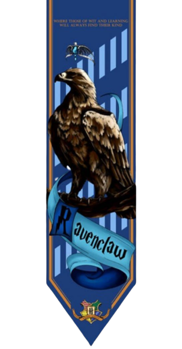
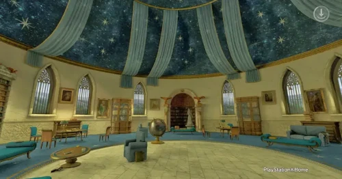
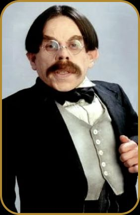
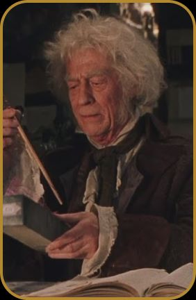
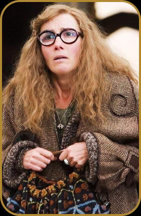

Quem sabe será a velha e sábia Corvinal
A Casa dos que tem a mente sempre alerta
Onde os homens de grande espírito e saber
Sempre encontrarão companheiros seus iguais
A fundadora da casa Corvinal, Rowena Ravenclaw, era conhecida por sua mente brilhante e busca insaciável por conhecimento. Ela selecionava os estudantes mais inteligentes para sua casa, a fim de cultivar seus talentos e ajudá-los a alcançar todo o seu potencial. A casa Corvinal é frequentemente associada com as artes, a sabedoria e a originalidade, com estudantes altamente motivados a buscar novos conhecimentos e habilidades.
O símbolo da casa Corvinal é uma águia, representando sabedoria e visão aguçada. Suas cores são o azul e o bronze, com o azul simbolizando a inteligência e o bronze representando a originalidade.
A sala comunal da casa Corvinal fica em uma das torres de Hogwarts, com uma vista espetacular do castelo e dos terrenos da escola. O ambiente é decorado com objetos inspirados na águia, como estátuas e tapeçarias, e as paredes são adornadas com estantes repletas de livros de todos os assuntos imagináveis. Há também confortáveis poltronas e sofás para os estudantes relaxarem e discutirem suas teorias e descobertas.
Os estudantes da casa Corvinal são altamente inteligentes, curiosos e criativos, com uma forte inclinação para a busca do conhecimento e da sabedoria. Eles são frequentemente associados com a originalidade e a inovação, e são conhecidos por suas mentes afiadas e habilidades analíticas. No entanto, às vezes eles podem ser vistos como um pouco elitistas ou distantes, devido ao seu foco em suas próprias buscas intelectuais.
Uma aluna muito inteligente e imaginativa. Ela é famosa por suas crenças em criaturas mágicas estranhas e sua habilidade de ver coisas que os outros não conseguem.
o professor de Encantamentos de Hogwarts, Flitwick é um corvinal pequeno e enérgico que é muito respeitado por seus alunos e colegas. Ele é um bruxo talentoso e um grande defensor da disciplina e da concentração.
Amet minim mollit non deserunt ullamco est sit aliqua dolor do amet sint. Velit officia consequat duis enim velit mollit. Exercitation veniam consequat sunt nostrud amet.
Amet minim mollit non deserunt ullamco est sit aliqua dolor do amet sint. Velit officia consequat duis enim velit mollit. Exercitation veniam consequat sunt nostrud amet.